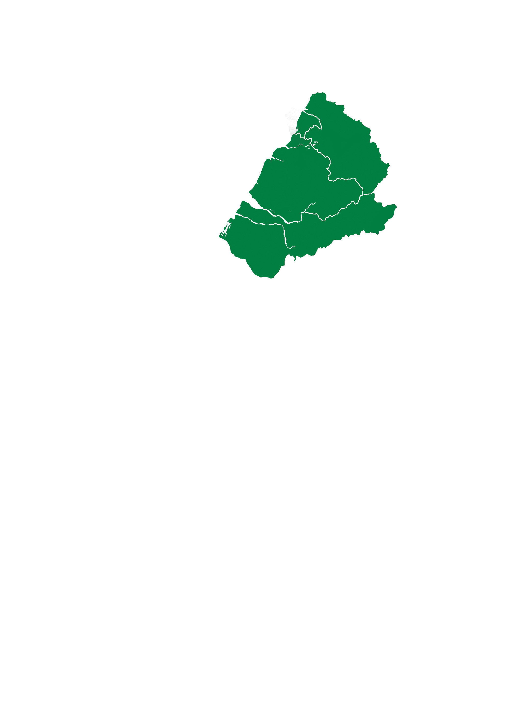
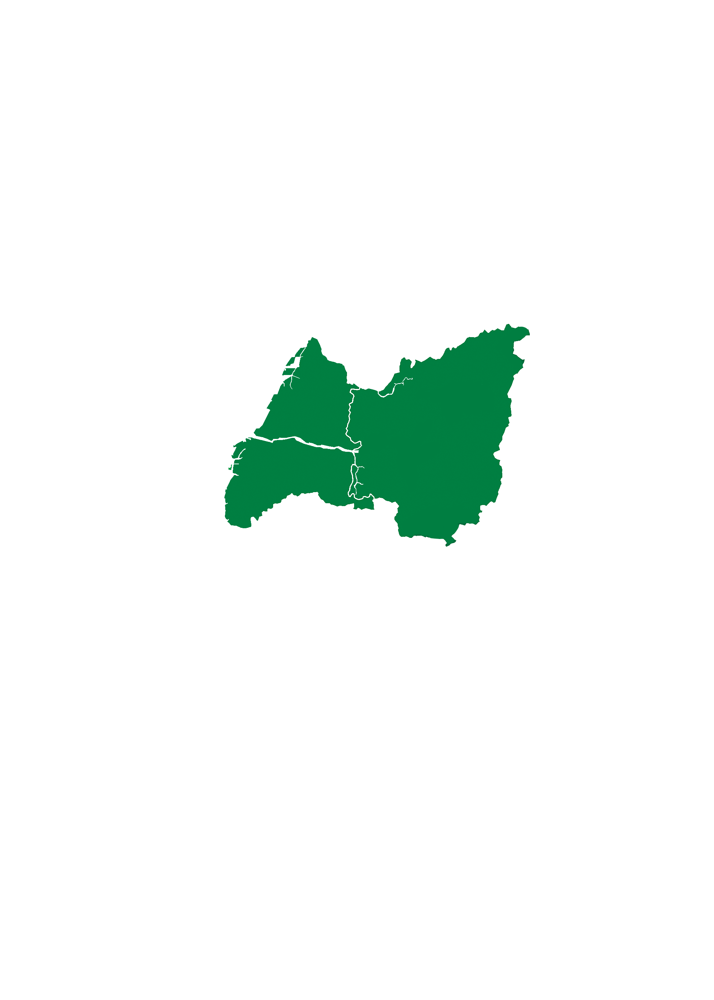
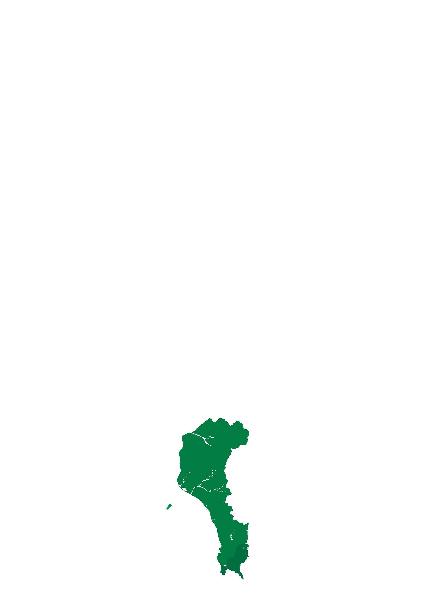
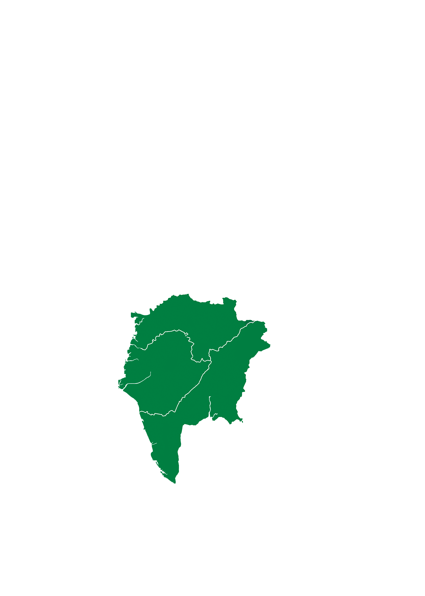
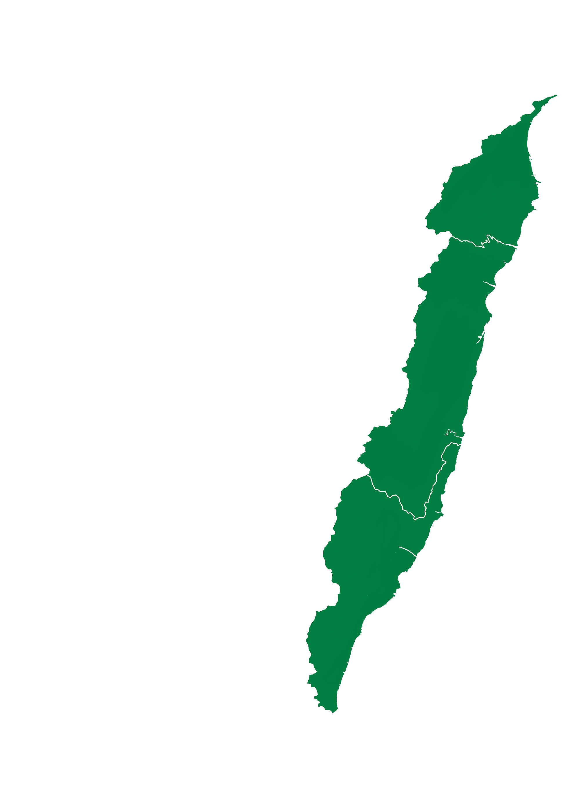

北部岩岸海域
軟絲
九孔
海膽
北部海域常見岩岸、潮池與潮流交會環境，適合介紹附著生物、頭足類與近岸魚群。
先改成最清楚的一張一張圖片展示方式，讓每個區域的地圖都能直接看見。 下面每張圖都對應一個區域，並搭配代表物種與簡短介紹。

北部海域常見岩岸、潮池與潮流交會環境，適合介紹附著生物、頭足類與近岸魚群。

這一帶適合介紹潮間帶、河口與濕地生態，也能把人與海岸生活一起放進內容裡。

中部海岸適合結合海洋生態與保育議題，像中華白海豚就是很有代表性的主題。
雲嘉南很適合介紹潟湖、濕地與魚塭文化，讓海洋內容更貼近地方生活。

南部海域色彩豐富，珊瑚礁與熱帶魚群非常適合做成視覺吸引力高的教學區塊。

花東海域受黑潮影響，適合介紹洄游魚群、海豚與深海環境，是很有探險感的一區。